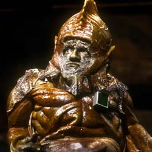

| Home | The Doctors | The Villains | |
|
|||
|
Sil is a fictional alien from the television series Doctor Who, first appearing in the 1985 serial Vengeance on Varos. Sil was portrayed by Nabil Shaban. Sil was the representative of the Galatron Mining Corporation present on the planet Varos to extract concessions from the current Governor. Unbeknownst to the Varosians, the mineral Zeiton-7 which was abundant on their planet was not as they thought nearly valueless, but in fact rare, particularly to time travellers. The Varosians lived barely above the poverty line due to the exploitation of companies like the Galatron Mining Corporation and others. Sil was a particularly vile creature by any standard, more so since a fault in his translation device made his voice sibilant, with a ululating laugh. Devoid of morality and dedicated to getting the cheapest price he could for Zeiton ore by any means, he also enjoyed the various tortures which passed for entertainment on Varos, taking particular delight in making the Sixth Doctor'scompanion Peri suffer a transformation into an avian creature. The Doctor interfered with Sil's plan and informed the Varosians of the true value of their natural resources, forcing Sil to concede to offer the true value of the Zeiton-7. |